通用定位工具集成了几何定位、区域定位两个子工具，各个子工具可以自如切换，主要作用是实时图像中进行一个到多个实时模式与训练模式之间的匹配，并计算出变换关系、匹配分数、位置、角度等诸多信息。
图1是一种典型定位案例，图中十字标记作为训练模式特征，训练位置坐标(320,240)。其中：a为训练原图；b为训练原图经过平移(10,10)；c为训练原图旋转-10°；d为训练原图旋转10°；e为低信噪比图像；f为低对比度图像；g为低亮度图像；h为高亮度图像；i为部分缺失图像。上述多种情况下，通用定位工具均能给出高精度定位结果。
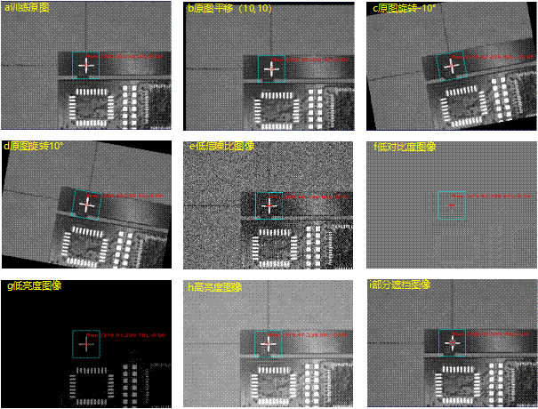
通用定位工具中集成几何定位、区域定位两个定位功能，这样可以对定位方式进行随意切换，而不用导致数据链重新链接，减少工程改动量。
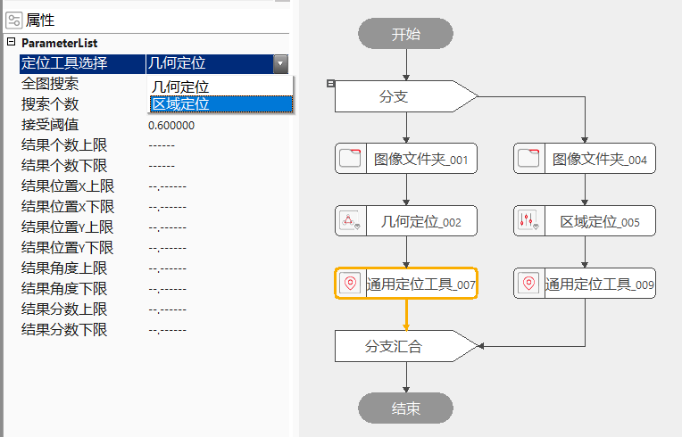
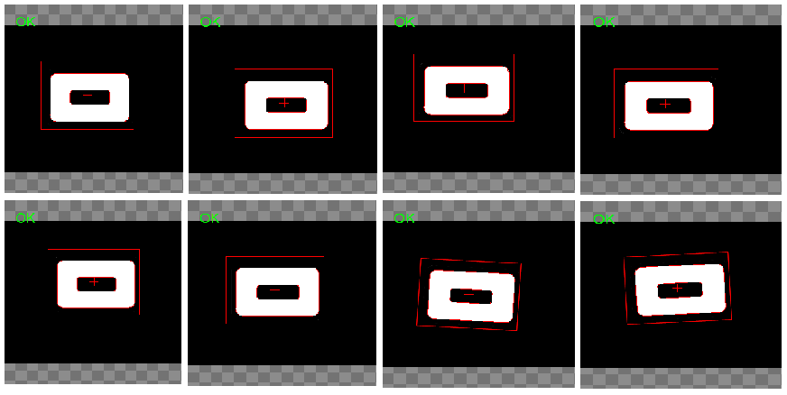
通用定位工具中集成几何定位、区域定位两个定位功能。
几何定位工具通过模式训练来获取目标的几何特征描述，几何特征可以精确、快速的进行旋转、缩放等变换，且对图像灰度线性、灰度非线性变化具有良好的适应性。几何定位工具在实时图像中搜索训练模式，计算实时图像中结果模式的位置、其相对于训练模式的角度和相对于训练模式的缩放。
区域定位以图像灰度信息为基础，用归一化相关系数作为相似性度量指标，在实时图像中搜索与参考图像（包含特定特征）相一致特征的位置。
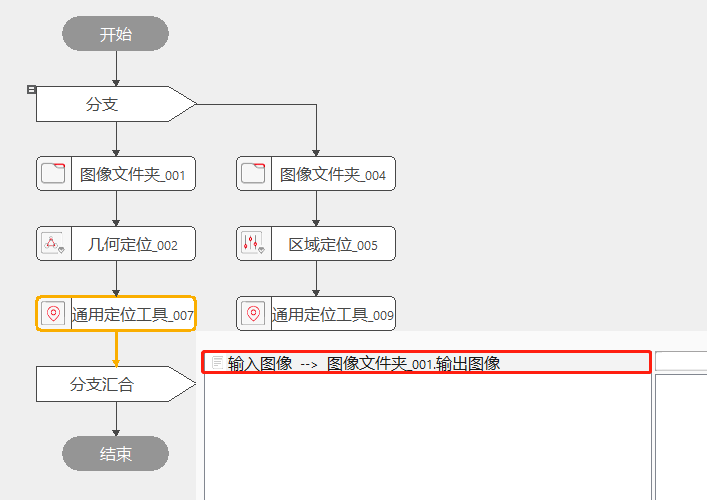
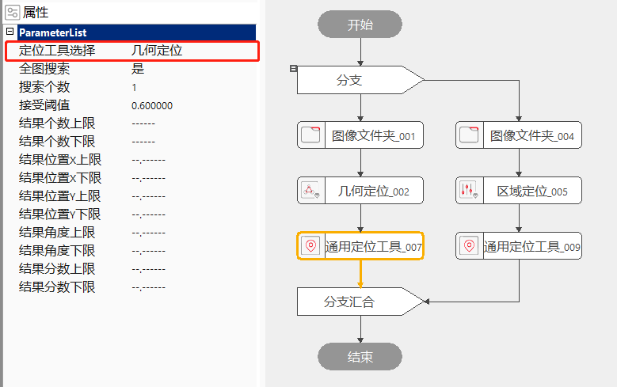
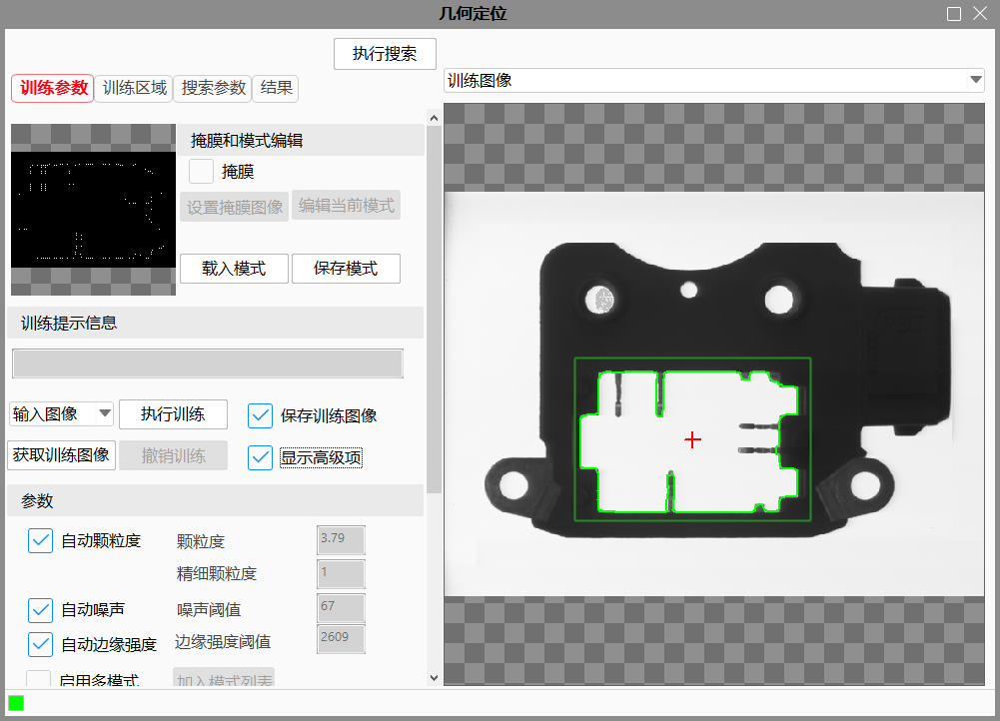
颗粒度
一个模式由若干个几何特征组成，每一个特征对应为图像中的一条边界。为了提高搜索效率，我们对边界点以颗粒度为采样间隔进行重采样。当颗粒度较大时，用来描述模式的边界点数量较少，搜索效率得到较大的提高。与此同时，模式中尺寸较小的几何特征由于边界点数量不足而被删除。
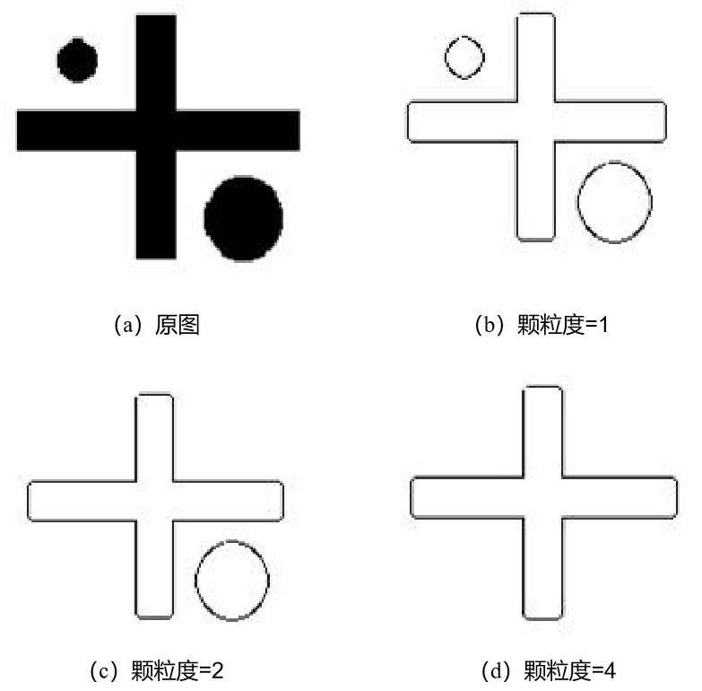
掩膜
高级界面中点击“启动掩膜”以及“设置掩膜图像”后，就可以在模板训练过程中，屏蔽掉不参与模式训练的区域，减少参与模式训练的几何特征了。
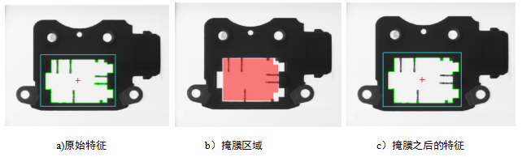
图3a)：原始的特征图像，当现场定位只需要白边轮廓而不需要使用向内凹的突起时，可使用掩膜。
图3b)：掩膜工具中被红色覆盖的区域是不参与特征训练的。掩膜好之后，点击“应用”，该掩膜区域就设置成功。
图3c)：掩膜完之后，点击高级界面中的“执行模式训练”，则会生成新的训练模板。
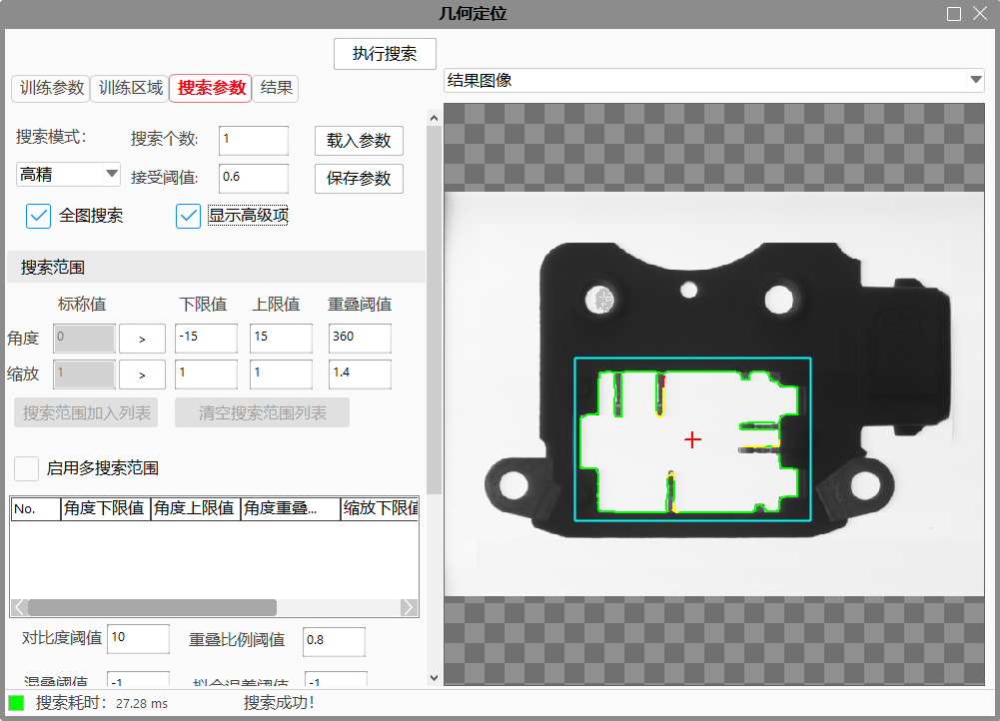
重叠阈值
重叠阈值为两个定位结果在图像中重叠的百分比，其取值范围为0到1，其中0表示二者无重叠，1表示二者完全重合。如果两个定位结果之间的重叠值大于重叠阈值，并且在其他开启的自由度上也是重复的，定位工具会删除其中评价分数较低者，保留具有更佳匹配的结果。如图4所示，a中重叠值为0；b中重叠值为0.5；c中重叠值为1.0。重叠阈值也会在一定程度上影响工具的耗时。重叠阈值越高，定位过程中待评价的定位结果可能就越多，定位工具的耗时可能也会更高。一般的，我们设置重叠阈值为0.8。
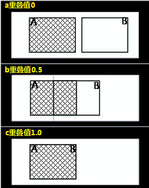
结果个数上下限
设定结果个数的判定区间，默认为“——”不设置判定区间，可设置的判定区间为[0, 5000]且上限大于下限或只设置一个，只设置一个则进行单边判定，大于等于判定下限或小于等于上限执行结果为成功，反之失败；当设置两个判定区间后，当结果个数大于等于判定下限小于等于上限时执行结果为成功，反之失败。
结果位置X上下限
设定结果位置X的判定区间，默认为“–.——”不设置判定区间，可设置的判定区间为[0,100000]且上限大于下限或只设置一个，只设置一个则进行单边判定，大于等于判定下限或小于等于上限执行结果为成功，反之失败；当设置两个判定区间后，当结果个数大于等于判定下限小于等于上限时执行结果为成功，反之失败。
结果位置Y上下限
设定结果位置Y的判定区间，默认为“–.——”不设置判定区间，可设置的判定区间为[0, 100000]且上限大于下限或只设置一个，只设置一个则进行单边判定，大于等于判定下限或小于等于上限执行结果为成功，反之失败；当设置两个判定区间后，当结果个数大于等于判定下限小于等于上限时执行结果为成功，反之失败。
结果角度上下限
设定结果角度的判定区间，默认为“–.——”不设置判定区间，可设置的判定区间为[-360, 360]且上限大于下限或只设置一个，只设置一个则进行单边判定，大于等于判定下限或小于等于上限执行结果为成功，反之失败；当设置两个判定区间后，当结果个数大于等于判定下限小于等于上限时执行结果为成功，反之失败。
结果分数上下限
设定结果分数的判定区间，默认为“–.——”不设置判定区间，可设置的判定区间为[0, 1]且上限大于下限或只设置一个，只设置一个则进行单边判定，大于等于判定下限或小于等于上限执行结果为成功，反之失败；当设置两个判定区间后，当结果个数大于等于判定下限小于等于上限时执行结果为成功，反之失败。
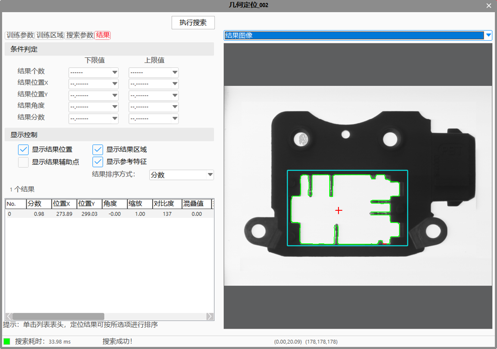
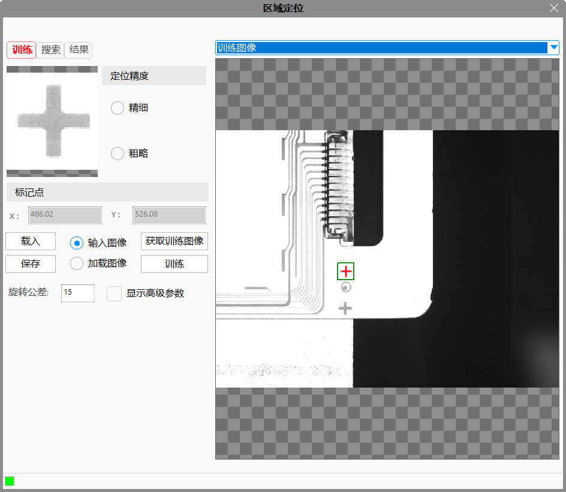
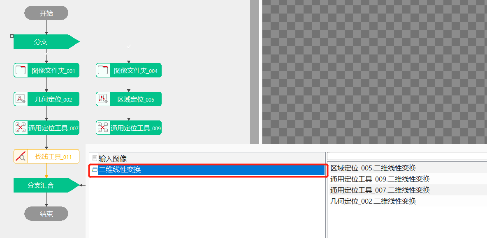
| 现象描述 | 解决方法 |
|---|---|
| 切换定位工具之后，执行弹出未执行训练错误 | 切换定位工具之后，之前没有对该定位工具执行训练时，需要重新进行训练 |
| 执行之后出现长时间的未响应 | 颗粒度等参数设置偏小可能会导致计算量几何倍上升，可以等待执行完成，或者等待执行完成之后，重新修改参数 |
| 高级界面拖动ROI，Edit中框线不能实时更新 | 通用定位工具关闭高级界面后同步高级界面ROI和工程中的Edit及Result界面 |
| 参数名称 | 参数说明 |
|---|---|
| 定位工具选择 | 主要包括2种，几何定位、区域定位。 |
| 训练区域(几何定位训练区域) | 模板图像中参与训练的仿射矩形区域。 |
| 标记点 | 标记点用于辅助定位，点击该属性可打开或关闭标记点的手动输入功能，建议把标记点放在训练区域的中心。 |
| 全图搜索 | 开启全图搜索的开关。当选择“是”时，整幅实时采集的图像都是该工具的搜索范围；当选择“否”时，Edit视图中的“搜索区域”仿射矩形是该工具的搜索范围。搜索区域要大于训练区域。 |
| 是否外部输入搜索区域 | 可选是或否。 |
| 搜索区域 | 显示实时图像上参与搜索的仿射矩形区域。与属性窗口中关闭“全图搜索”后出现的“搜索区域”是同一个参数。 |
| 搜索个数 | 期望的结果个数，取值范围[1,+∞）只支持整数。 |
| 接受阈值 | 实时的定位图像与模板的匹配程度会有一个分数，该分数低于接受阈值时会排除这一次搜索结果。接受阈值的取值范围是(0,1)。 |
| 结果个数上限 | 设定结果个数上限，默认为“——”不判定，可设置的判定区间为[0, 5000]且大于下限，当结果个数大于上限时执行结果为失败。 |
| 结果个数下限 | 设定结果个数下限，默认为“——”不判定，可设置的判定区间为[0, 5000]且小于上限，当结果个数小于下限时执行结果为失败。 |
| 结果位置X上限 | 设定结果位置X上限，默认为“–.——”不判定，可设置的判定区间为[0, 100000]且大于下限，当结果位置X大于上限时执行结果为失败。 |
| 结果位置X下限 | 设定结果位置X下限，默认为“–.——”不判定，可设置的判定区间为[0, 100000]且小于上限，当结果位置X小于下限时执行结果为失败。 |
| 结果位置Y上限 | 设定结果位置Y上限，默认为“–.——”不判定，可设置的判定区间为[0, 100000]且大于下限，当结果位置Y大于上限时执行结果为失败。 |
| 结果位置Y下限 | 设定结果位置Y下限，默认为“–.——”不判定，可设置的判定区间为[0, 100000]且小于上限，当结果位置Y小于下限时执行结果为失败。 |
| 结果角度上限 | 设定结果角度上限，默认为“–.——”不判定，可设置的判定区间为[-360, 360]且大于下限，当结果角度大于上限时执行结果为失败。 |
| 结果角度下限 | 设定结果角度下限，默认为“–.——”不判定，可设置的判定区间为[-360, 360]且小于上限，当结果角度小于下限时执行结果为失败。 |
| 结果分数上限 | 设定结果分数上限，默认为“–.——”不判定，可设置的判定区间为[0, 1]且大于下限，当结果分数大于上限时执行结果为失败。 |
| 结果分数下限 | 设定结果分数下限，默认为“–.——”不判定，可设置的判定区间为[0, 1]且小于上限，当结果分数小于下限时执行结果为失败。 |
| 输入图像（数据链） | 用来实时搜索的图像。 |
| 训练图像（数据链） | 用来进行模板训练的图像。 |
| 外部输入搜索区域（数据链） | 用于外部输入搜索区域。与属性窗口中开启“外部输入搜索区域”后出现的“外部输入搜索区域”是同一个参数。 |
| 参数名称 | 参数说明 |
|---|---|
| 输入图像 | 用来实时搜索的图像尺寸。 |
| 结果个数 | 搜索结果个数。 |
| 结果位置 | 结果位置是指标记点实时搜索结果，结果位置是指该工具在某一次执行完后，所有搜索标记点所组成的数组。 |
| 结果角度 | 结果角度是指标记点实时搜索角度，结果角度是指该工具在某一次执行完后，所有搜索标记点角度所组成的数组。 |
| 二维线性变换数组 | 二维线性变换是指目标相对于模板的平移、旋转、缩放变换。二维线性变换数组是指在该工具在某一次执行完之后，所有二维线性变换所组成的数组。 |
| 结果分数 | 匹配结果的得分 |
| 搜索坐标 | 该工具输出的搜索坐标是指搜索坐标数组的第一组值。它与输出的二维线性变换针对同一个搜索结果。 |
| 角度 | 该工具输出的搜索角度是指搜索角度数组的第一组值。它与输出的二维线性变换针对同一个搜索结果。 |
| 二维线性变换 | 该工具输出的二维线性变换是指该工具二维线性变换数组中的第一组值。 |
| 工具执行结果 | 工具执行结果。 |
| 工具执行时间 | 工具执行时间。 |
参见“\Samples\通用定位工具.gvp”。